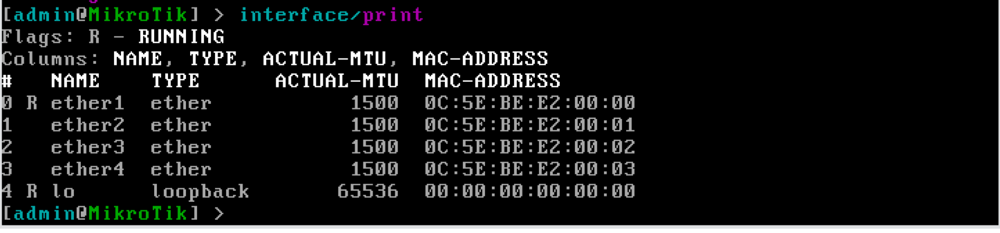
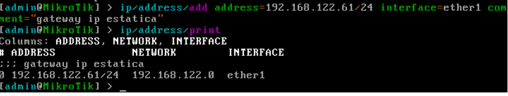
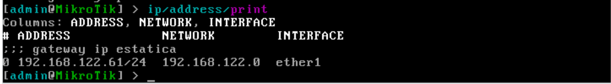
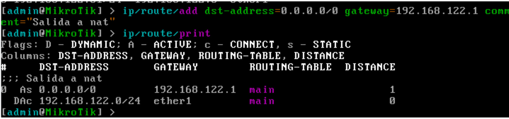
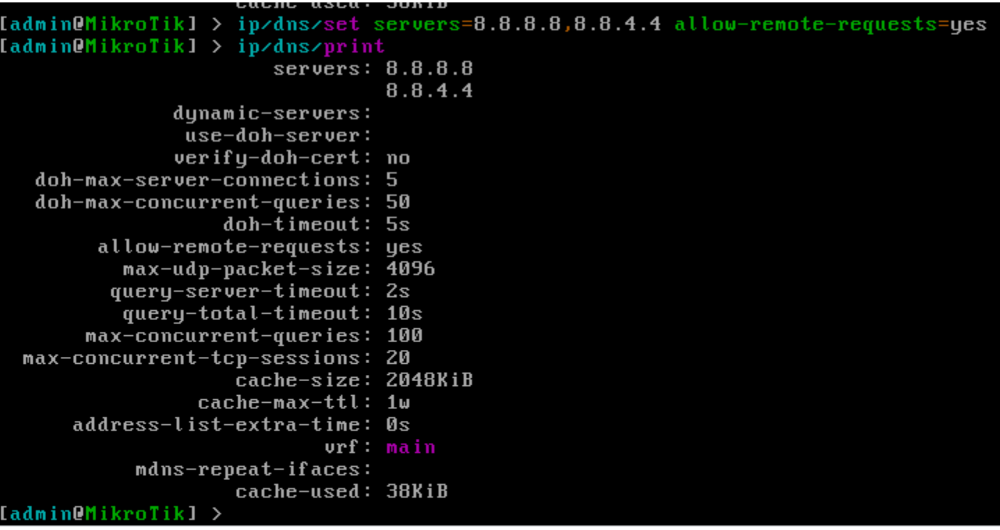
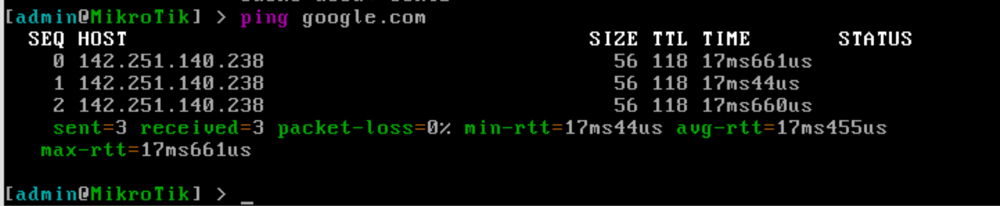
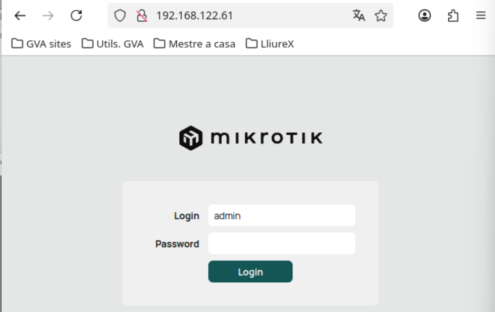
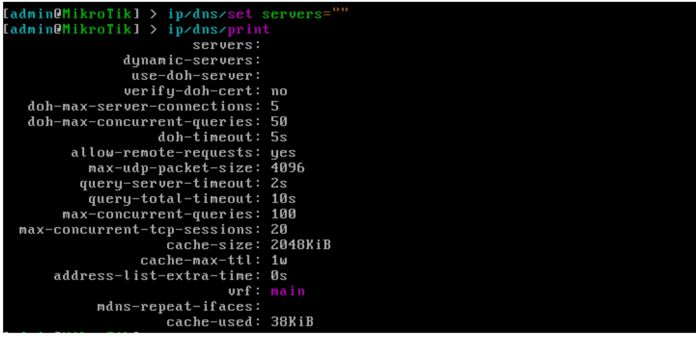
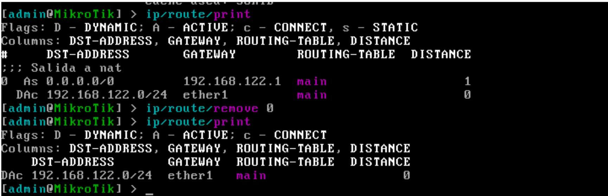
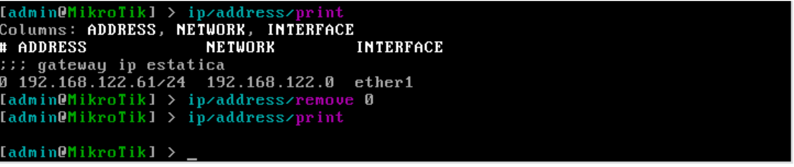

Configuración de IP estática sobre interfaz física
Índice
- Introducción
- Ejemplo 2 — Configuración de IP estática sobre una interfaz física
- Asignación manual de IP
- Asignación manual de ruta por defecto
- Asignación manual de servidores DNS
- Eliminación manual de la configuración aplicada
Introducción
A lo largo de esta práctica trabajaremos sobre un escenario típico: la configuración de la interfaz que actuará como gateway, asignando su dirección IP estática de manera manual. Este enfoque es extremadamente habitual en entornos reales, donde el router no recibe una configuración dinámica, sino que depende de la configuración manual del operador de red.
Ejemplo 2 — Configuración de IP estática sobre una interfaz física
Este segundo escenario representa la configuración manual más simple y directa posible en RouterOS: asignar manualmente una dirección IP a una interfaz física del router para que la interfaz pueda interactuar con la red existente.
Para ello, vamos a configurar la primera interfaz del router con la misma IP que tenía asignada por DHCP (en mi caso 192.168.122.61/24), para posteriormente comprobar que podemos acceder al router a través de esta interfaz.
Asignación manual de IP
En primer lugar, vamos a listar las interfaces físicas de nuestro router, para seleccionar cuál configuraremos, ejecutando el siguiente comando:
interface/print

En mi caso, configuraré la interfaz ether1, asignándole la IP 192.168.122.61/24, ejecutando:ip/address/add address=192.168.122.61/24 interface=ether1 comment="Gateway – IP estatica"

Como vemos en la captura, podemos comprobar la asignación de la IP, utilizando el comando:ip/address/print

Asignación manual de ruta por defecto
Si deseamos poder navegar por internet, deberemos indicar cuál es la puerta de enlace de la red, añadiendo una ruta por defecto:
ip/route/add dst-address=0.0.0.0/0 gateway=192.168.122.1 comment="Salida a NAT"

Asignación manual de servidores DNS
Y si se requiere traducción de nombres de dominio, deberemos configurar las IP de los servidores DNS:
ip/dns/set servers=8.8.8.8,8.8.4.4 allow-remote-requests=yes

Con esta configuración, el router tendría acceso a internet. Podemos comprobarlo accediendo a una URL conocida, con el siguiente comando:ping google.com

También podemos acceder al router utilizando un navegador web de la máquina anfitrión, a través de la IP configurada:
Eliminación manual de la configuración aplicada
Para eliminar la configuración aplicada, realizamos las siguientes operaciones:
- Eliminamos las direcciones de los servidores DNS
ip/dns/set servers=""

- Visualizamos las rutas existentes, y eliminamos la ruta por defecto creadaip/route/print
ip/route/remove <indice>

- Eliminamos la IP de la interfaz física ether1ip/address/print
ip/address/remove <indice>

Tras eliminar los elementos configurados, volvemos a tener un router en blanco, preparado para la próxima práctica.
Preguntas
1. ¿Qué es una IP estática?
Ver respuesta
Es una dirección IP configurada manualmente en un dispositivo y que no cambia automáticamente.2. ¿En qué casos se utiliza IP estática?
Ver respuesta
En servidores, routers, gateways o entornos donde se requiere una configuración fija y controlada.3. ¿Qué diferencia hay entre IP estática y dinámica?
Ver respuesta
La IP estática se configura manualmente, mientras que la dinámica se obtiene automáticamente mediante DHCP.4. ¿Por qué un router puede necesitar IP estática?
Ver respuesta
Para actuar como gateway estable dentro de una red y garantizar conectividad constante.5. ¿Qué comando muestra las interfaces del router?
Ver respuesta
interface/print6. ¿Cómo se asigna una IP estática a una interfaz?
Ver respuesta
ip/address/add address=192.168.122.61/24 interface=ether17. ¿Cómo se comprueba la IP configurada?
Ver respuesta
ip/address/print8. ¿Qué comando añade una ruta por defecto?
Ver respuesta
ip/route/add dst-address=0.0.0.0/0 gateway=192.168.122.19. ¿Para qué sirve la ruta por defecto?
Ver respuesta
Permite que el router envíe tráfico hacia redes externas (Internet).10. ¿Cómo se configuran los servidores DNS?
Ver respuesta
ip/dns/set servers=8.8.8.8,8.8.4.4 allow-remote-requests=yes11. ¿Para qué sirven los DNS?
Ver respuesta
Para traducir nombres de dominio en direcciones IP.12. ¿Cómo se comprueba la conectividad a Internet?
Ver respuesta
Haciendo un ping, por ejemplo: ping google.com13. ¿Qué significa que el ping funcione correctamente?
Ver respuesta
Que el router tiene conectividad a Internet y resolución DNS correcta.14. ¿Qué pasaría si configuras la IP pero no la ruta por defecto?
Ver respuesta
El router solo podrá comunicarse dentro de su red local, pero no tendrá acceso a Internet.15. ¿Qué ocurre si no configuras los DNS?
Ver respuesta
Habrá conectividad IP, pero no se podrán resolver nombres de dominio (no funcionarán URLs).16. ¿Por qué es importante configurar todos los elementos (IP, ruta, DNS)?
Ver respuesta
Porque cada uno cumple una función: la IP identifica el equipo, la ruta permite salir de la red y el DNS permite resolver nombres.17. ¿Cómo se eliminan los servidores DNS?
Ver respuesta
ip/dns/set servers=""18. ¿Cómo se elimina una ruta?
Ver respuesta
ip/route/print ip/route/remove19. ¿Cómo se elimina una IP de una interfaz?
Ver respuesta
ip/address/print ip/address/remove20. ¿Qué ocurre tras eliminar toda la configuración?
Ver respuesta
El router queda sin configuración de red, listo para una nueva práctica.Warning
No olvides configurar la ruta por defecto o no tendrás acceso a Internet.
Danger
La IP, la ruta y el DNS deben estar correctamente configurados para que todo funcione.
Tip
Usa siempre ping para verificar que la configuración es correcta.